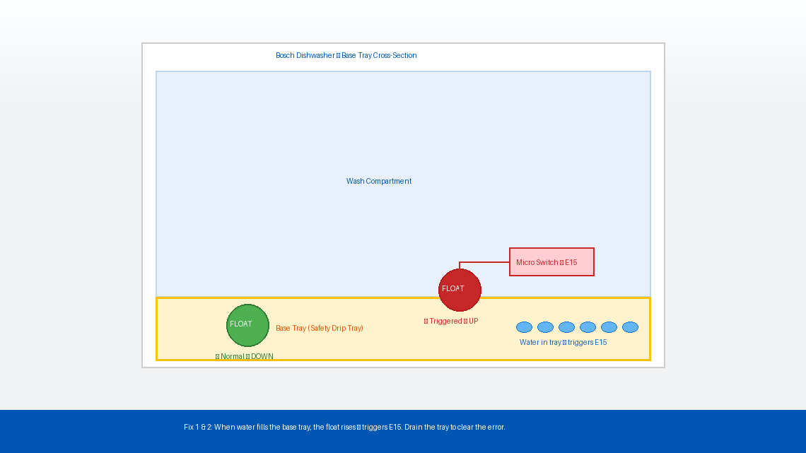
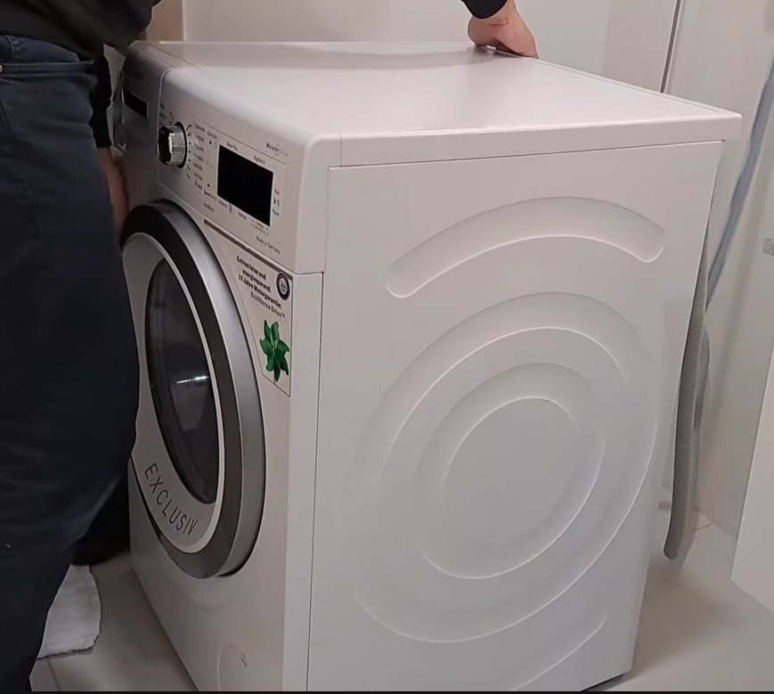
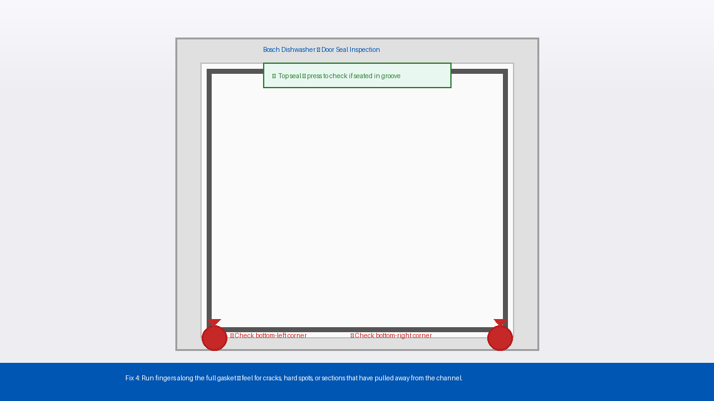
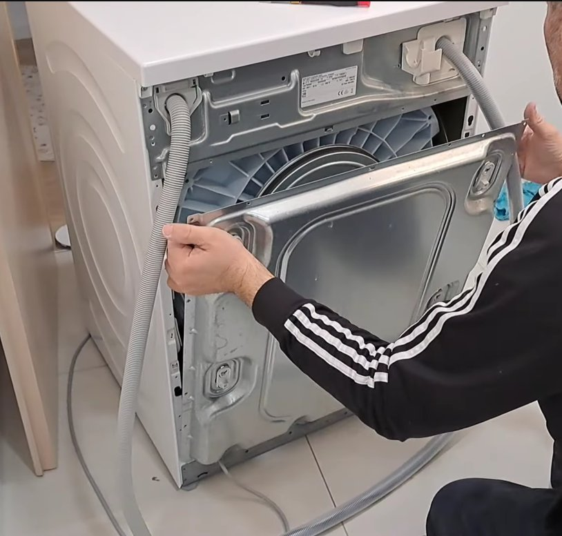
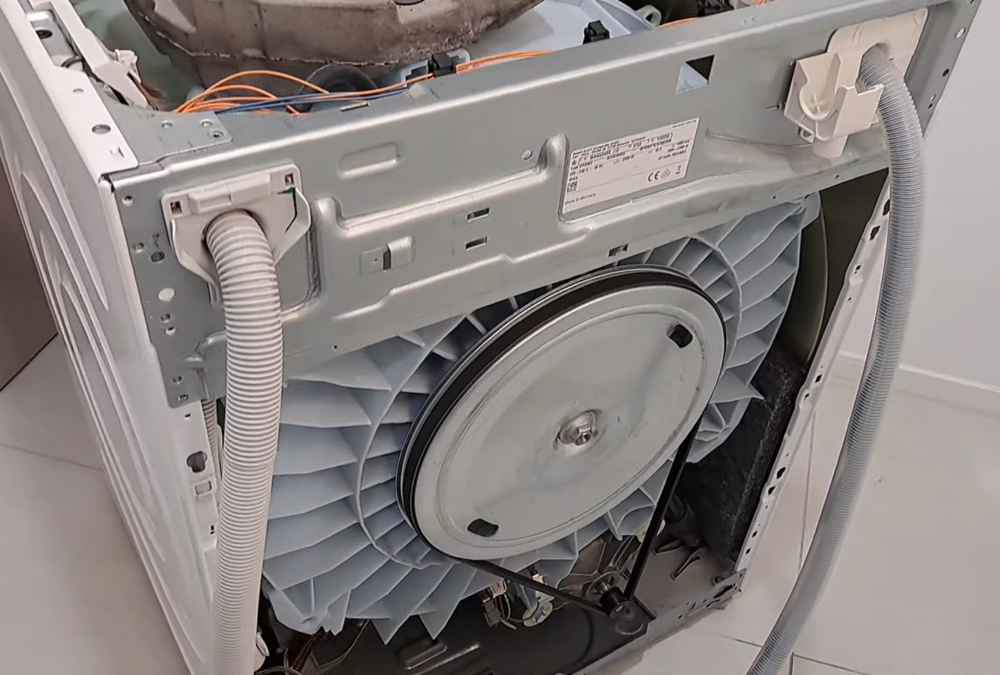

Bosch Dishwasher E15 Error: What Triggered It and How to Clear It
E15 on a Bosch dishwasher means the anti-flood sensor in the base tray has detected water it shouldn't see. The machine locks out as a precaution. In most cases, a small amount of water has reached the base pan through a seal leak or an overflow — tilting the machine at a 45-degree angle drains it and resets the float sensor without needing a technician.
What Does Error E15 Mean?
The short version, E15 means your Bosch dishwasher has detected water in a place it should never be — specifically, in the base tray at the very bottom of the machine, underneath all the internal components.
Every Bosch dishwasher has a shallow plastic drip tray built into the base. This tray sits underneath the pump, hoses, and wash system as a safety net. Inside this tray is a small float device — a buoyant piece of plastic attached to a micro switch. When even a small amount of water collects in the tray, the float rises, triggers the switch, and the control board immediately kills the wash cycle and displays E15.
The most important thing to understand: E15 does not necessarily mean your dishwasher has a serious leak. The three most common causes are:
- Tilting the dishwasher during installation or moving — even a small amount of internal water can slosh into the base tray and trigger the float
- A minor one-time overflow from overloading detergent or a single loose hose connection that has already stopped
- An actual recurring leak from a worn door seal, damaged hose, or loose pump connection that needs to be found and fixed
The first two causes require no repair at all — just draining the base tray. The third requires a bit more investigation, but is still very manageable at home.

Tools You’ll Need
Here’s everything you may need, depending on how far you need to go:
- Old towels or absorbent cloths (several — you’ll need them)
- A shallow tray or baking dish
- A turkey baster or large syringe (helpful but optional)
- A Phillips head screwdriver
- A flashlight or headlamp
- A dry/wet vacuum cleaner (optional but makes the job much faster)
- About 20–30 minutes of your time
Step-by-Step Fixes (Easiest Fix First)
Start at Fix 1 and move down only if the problem persists. Fix 1 or Fix 2 resolves this for most people.
This is the single most effective fix for E15, and it works for the majority of cases. The goal is simple: physically drain the water out of the base tray so the float drops back down and the error clears.
- Turn the dishwasher off using the power button.
- Open the door and remove the lower dish rack to give yourself access.
- Using towels, soak up any standing water visible at the bottom of the wash compartment.
- Carefully pull the dishwasher forward a few inches from under the counter. Most built-in Bosch dishwashers have adjustable feet — you don’t need to fully remove the machine.
- Tilt it forward by lifting the rear feet or placing a folded towel under the back. You only need about a 45-degree lean — enough for water to flow toward the front of the tray.
- Hold it tilted for 30–60 seconds while the water drains toward the front lip.
- Place towels on the floor in front to catch the water that runs out.
- Set the machine back level, slide it back in, restore power, and run a short rinse cycle.
This single step clears E15 for a huge proportion of users — especially those who recently had the dishwasher installed, moved, or serviced.

If tilting didn’t drain everything — or if you want to be thorough — manually removing the remaining water ensures the float drops completely and the error resets properly.
- Unplug the dishwasher from the wall.
- Remove the kickplate — the narrow panel at the very bottom front. It typically unclips or is held by one or two screws at the bottom edge.
- With your flashlight, look into the base to see the plastic tray and the float device (a small white or black disc).
- Use towels, a turkey baster, or a wet/dry vacuum to remove as much water as possible.
- Locate the float switch and gently press it down to confirm it moves freely. If it feels sticky or stuck, clean around its base with a damp cloth and press it down again.
- Allow the tray to air dry for 10–15 minutes, or use a hairdryer on a low, cool setting.
- Replace the kickplate, plug in, and run a test cycle.
Using too much detergent, the wrong type, or a low-quality tablet that foams excessively can flood the base tray with suds even without any mechanical leak. This is more common than most people realise.
- After clearing the base tray, inspect the wash compartment for residual foam or soapy residue.
- Bosch dishwashers require dishwasher-specific detergent only — never hand dish soap. Even a single tablespoon of hand soap generates enough foam to fill the base tray.
- If you suspect over-foaming, run two or three rinse-only cycles (no detergent) to flush the system clean.
- Going forward, use only the recommended amount — and if using economy tablets, try switching to Finish or Somat to reduce foam.
If E15 returns after a wash cycle or two, water is actively entering the base tray during operation. The most common source is a deteriorated or misaligned door gasket.
- Unplug the dishwasher.
- Open the door fully and run your fingers around the entire rubber gasket, pressing gently as you go.
- Look and feel for: cracks, tears, flattened sections, hard or brittle spots, or areas where the seal has pulled away from the door channel.
- Pay extra attention to the bottom corners — this is where wear and leaking most commonly starts.
- If the seal is out of its groove, press it firmly back into the channel along its entire length.
- If you find visible damage, the seal needs to be replaced. Bosch door seals are widely available online for €15–€40 / $20–$50. Pull the old one out, clean the channel, press the new one in — no tools required.

If the door seal is intact but E15 keeps returning, the leak is coming from inside the machine — most likely a hose connection or the pump housing. This step requires pulling the dishwasher fully out.
- Unplug the dishwasher and turn off the water supply valve under the sink.
- Carefully pull the machine fully out from its cabinet space.
- Lay towels around the machine, then run a short wash cycle (plug in temporarily) and watch the base closely with your flashlight. Look for drips from hose connections, the pump body, or the door bottom.
- Once you’ve identified the drip point, unplug the machine immediately.
- Loose hose clamps — the most common culprit — can usually be tightened with a screwdriver or pliers.
- If a hose has a visible crack or split, it needs to be replaced.
- After any repair, dry the base tray completely (Fix 2) before running a test cycle — otherwise old water will immediately re-trigger E15.


When to Call a Professional
E15 is one of the more DIY-friendly Bosch error codes, but there are clear situations where a service call is the smarter move:
- E15 returns repeatedly even after drying the tray, checking the door seal, and inspecting the hoses. A recurring leak that you can’t locate visually likely involves the pump seal or sump gasket — components that require significant disassembly.
- You see water actively dripping from the pump body. Pump housing cracks are not a home repair — the pump assembly needs to be professionally assessed or replaced.
- Your dishwasher is still under warranty. Bosch offers a standard 2-year warranty on most models. Opening the machine yourself can void this — contact Bosch first if the machine is relatively new.
- There is visible corrosion, a burning smell, or any sign of electrical damage near the base tray. Unplug immediately and do not use until a technician has inspected it.
To reach Bosch’s service team: visit bosch-home.com/service. In India, Bosch support is available at 1800-266-1880 (toll-free). Have your model number ready — printed on a sticker inside the door frame on the left side.
Quick Summary
| Fix | Difficulty | Time Needed |
|---|---|---|
| Tilt dishwasher forward to drain base tray | Very Easy | 5 minutes |
| Manually dry the base tray via kickplate | Easy | 15 minutes |
| Check detergent type and quantity | Very Easy | 2 minutes |
| Inspect and reseat or replace door seal | Easy | 15–30 minutes |
| Inspect internal hoses and pump for drips | Moderate | 30 minutes |
Start at the top — tilting the machine to drain the base tray fixes E15 for most people before they even reach step two. If the error keeps coming back after a wash cycle, work your way down until you find where the water is actually coming from.
Fixed your Bosch dishwasher? The base tray tilt (Fix 1) surprises most people with how well it works — keep it in your back pocket because E15 can show up again any time the machine is moved or bumped.